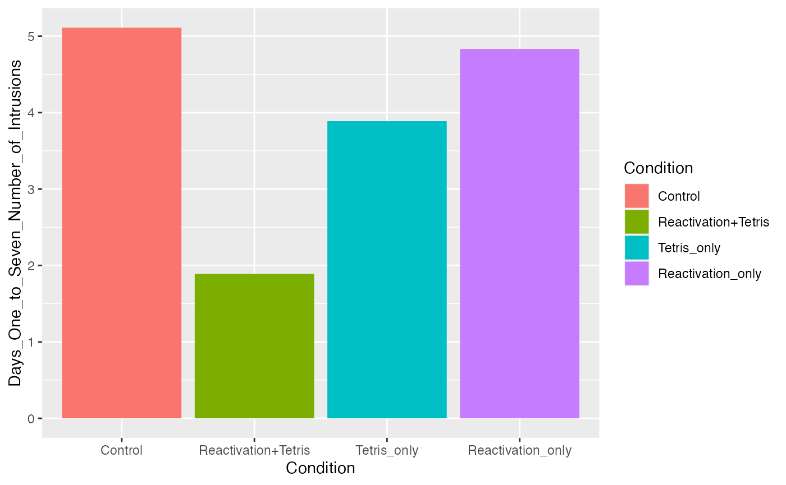

Lab4.Rmdexample_data <- tibble(Group = rep(c(“A”,“B”), each = 5), DV = c(2,4,3,5,4,7,6,5,6,7))
Use R to conduct a t.test and ANOVA on this data. Then use R to prove that the results of both analyses are the same. For example, prove that the p-values are the same, and prove that the F-value and T-value are related. (3 points)
## ── Attaching packages ─────────────────────────────────────── tidyverse 1.3.1 ──## ✓ ggplot2 3.3.5 ✓ purrr 0.3.4
## ✓ tibble 3.1.6 ✓ dplyr 1.0.7
## ✓ tidyr 1.2.0 ✓ stringr 1.4.0
## ✓ readr 2.0.2 ✓ forcats 0.5.1## ── Conflicts ────────────────────────────────────────── tidyverse_conflicts() ──
## x dplyr::filter() masks stats::filter()
## x dplyr::lag() masks stats::lag()
example_data <- tibble(Group = rep(c("A","B"), each = 5),
DV = c(2,4,3,5,4,7,6,5,6,7))
t_object <- t.test(DV~Group, data = example_data, var.equal=TRUE)
aov_object <- aov(DV~Group, data=example_data)
class(t_object)## [1] "htest"
class(aov_object)## [1] "aov" "lm"
print(t_object)##
## Two Sample t-test
##
## data: DV by Group
## t = -4.111, df = 8, p-value = 0.003386
## alternative hypothesis: true difference in means between group A and group B is not equal to 0
## 95 percent confidence interval:
## -4.058445 -1.141555
## sample estimates:
## mean in group A mean in group B
## 3.6 6.2
sum.aov <- summary(aov_object)
##are f values and p values the same?
round(t_object$p.value, digits = 10) == round(sum.aov[[1]]$'Pr(>F)'[1], digits = 10)## [1] TRUE
##are the F and T values the same?
round(((t_object$statistic)^2), digits = 10) == round((sum.aov[[1]]$'F value'[1]), digits = 10)## t
## TRUE
#explore how to use papaja to report analysis using example data
library(papaja)
apa_print_out <- papaja::apa_print(aov_object)
apa_print_out$estimate## $Group
## [1] "$\\hat{\\eta}^2_G = .679$"
apa_print_out$full_result## $Group
## [1] "$F(1, 8) = 16.90$, $\\mathit{MSE} = 1.00$, $p = .003$, $\\hat{\\eta}^2_G = .679$"The main effect of the group was significant, \(F(1, 8) = 16.90\), \(\mathit{MSE} = 1.00\), \(p = .003\), \(\hat{\eta}^2_G = .679\)
##
## Attaching package: 'data.table'## The following objects are masked from 'package:dplyr':
##
## between, first, last## The following object is masked from 'package:purrr':
##
## transpose
library(papaja)
##Get data
library(readr)
all_data <- read_csv('https://raw.githubusercontent.com/CrumpLab/statisticsLab/master/data/Jamesetal2015Experiment2.csv')## Rows: 72 Columns: 28## ── Column specification ────────────────────────────────────────────────────────
## Delimiter: ","
## dbl (28): Condition, Time_of_Day, BDI_II, STAI_T, pre_film_VAS_Sad, pre_film...
##
## ℹ Use `spec()` to retrieve the full column specification for this data.
## ℹ Specify the column types or set `show_col_types = FALSE` to quiet this message.
all_data <- data.table(all_data)
all_data$Condition <- as.factor(all_data$Condition)
levels(all_data$Condition) <- c("Control",
"Reactivation+Tetris",
"Tetris_only",
"Reactivation_only")
summary(aov(Days_One_to_Seven_Number_of_Intrusions ~ Condition, all_data))## Df Sum Sq Mean Sq F value Pr(>F)
## Condition 3 114.8 38.27 3.795 0.0141 *
## Residuals 68 685.8 10.09
## ---
## Signif. codes: 0 '***' 0.001 '**' 0.01 '*' 0.05 '.' 0.1 ' ' 1
aov_object_tetris <- aov(Days_One_to_Seven_Number_of_Intrusions ~ Condition, all_data)
aov_object_tetris_print <- papaja::apa_print(aov_object_tetris)The effect of weird ttetris therapy was significant, \(F(3, 68) = 3.79\), \(\mathit{MSE} = 10.09\), \(p = .014\), \(\hat{\eta}^2_G = .143\)
ggplot(all_data, aes(x=Condition,
y=Days_One_to_Seven_Number_of_Intrusions,
fill = Condition))+
geom_bar(stat="summary", fun = "mean")